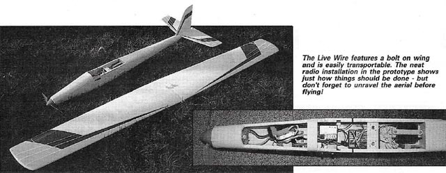
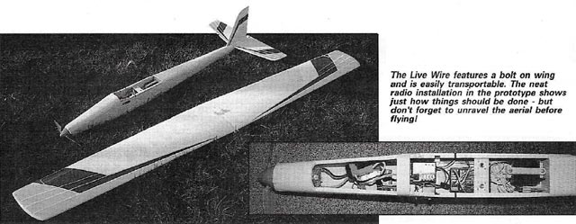
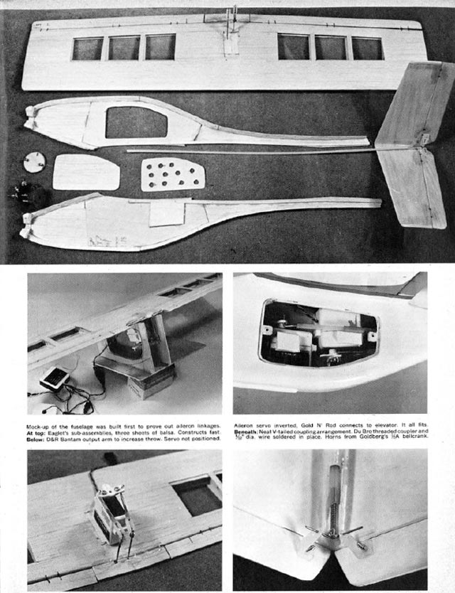
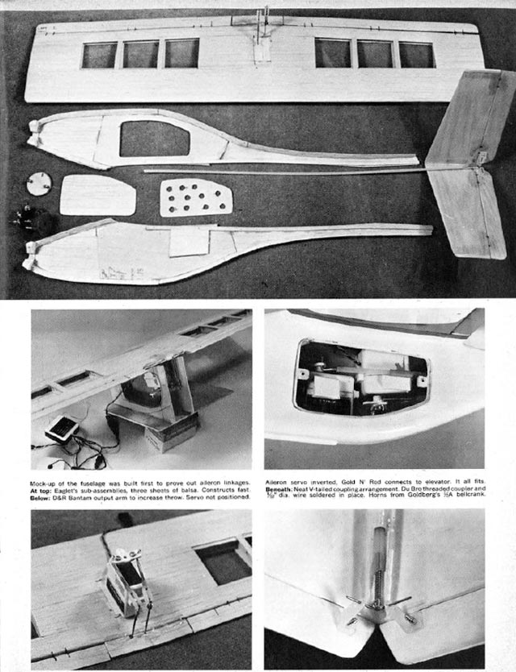

RC Models by Rastaman
A fanpage dedicated to old-timer radio controlled airplanes
To get a taste of what my page is about, please have a look at some nice vintage plane articles to begin with and if I peaked your interest, please check out my projects I am currently working on and all the planes on my wishlist

Live Wire (oz11670)
About this Plan
Live Wire. Radio control electric stunter.
"Sparks fly with Jason Carroll's 59 in electric stunter. Live Wire.
FROM the outset, Live Wire was designed to be aerobatic, yet it had to be easy to fly and with a good glide performance. In this last respect it would make an excellent aileron trainer, and a quiet one too!
This is a song by Roupa Nova
There is no need for expensive motors or mini radio. Indeed, the prototype flies extremely well with a Graupner Speed 600 motor and an 8 x 4.5 folding prop, costing in all no more than £14 or so. As for nicads, I strongly recommend Sanyo SCR cells. Performance otherwise may be disappointing.
So - if smooth, silent aerobatics take your fancy, let's get cracking!
First the fuselage: Select two firm sheets of similar-grade 1/8 balsa for the fuselage sides. Spot glue the sheets together and cut them as one, to give identical components. Now draw onto the sides (one left, one right!) the position of formers and floor support rails. Next glue the 1/2 in and 3/8 in triangular lengths to each side.
Formers F2 to F5 are cut from Lite-Ply. Cut F1 from birch ply, for this has to take the weight and torque of the motor. Glue F2 and F3 in position on one side using a set-square to ensure accuracy. F4 and F5 are next. Note the angles on the top, plan view.
Add wing seat doublers and 3/16 rails, followed by the elevator snake 'outer'. At this stage you may wish to fit a second snake tube for the receiver aerial.
Now glue the sides together at F2 and F3, trapping the Lite-Ply sheet floor between them. Don't forget this, as it will be impossible to fit later. Fix F1 in place with plenty of adhesive; pull the fuselage in at the nose, check for accuracy and hold together with clamps or rubber bands until the glue is dry. Now join the fuselage at the tail, gluing F4 and F5. Top and bottom fuselage sheeting is fitted with the grain running lengthways. Add the 1/8 sheet tailplane seat.
This is the time to transform the box in front of you into a smooth, sleek fuselage. The cross-sections on the plan show how. Templates will help. Be careful to not remove too much balsa as this will weaken the structure.
Face F1 with 1/8 sheet and F2 with the 1/32 ply wing peg support. Don't omit these as much strength is added. Now fit the wing seat LE spacers.
The top hatch and nicad bay hatch are cut away as shown on the plan. The latter is retained by two ply tabs and screws; ply plates in the fuselage will allow threads to be cut. The result is easy access, allowing you to change packs very swiftly indeed. Finally, glue the wing bolt shear plate under the wing seating. The holes for the nuts will be drilled later..."
Livewire, RCM&E, August 1991.
Direct submission to Outerzone.
.jpg) 

For
blueprint
please visit Outer Zone website
Here are some period pictures of the plane.
Barons Buggy (oz10720)
About this Plan
Sig Baron's Buggy. Radio control sport biplane model.
Quote: "Join the Aces - build the BARON'S BUGGY! SIG's new WWI semi-scale biplane single channel RC sport model. Here's your chance to get in the fun of flying in that wonderful world of old fighting crates of the Spad and Fokker era - with the Baron's Buggy, a sturdy Little 34 in span lightweight designed for quick building and easy flying in the hands of the average R/C sport flyer. Suitable for all .049 to .09 engines, it's fully aerobatic and has excellent penetration for windy weather flying. Kit features include top-grade die-cut Sig balsa, die-cut plywood ports, formed landing gear, 2 well-detailed plans (with twin Spandau machine gun drawings), authentic full-color decals and hardware. Your local hobby dealer has this hot one in stock now - and the price is a low, low $12.95."
.jpg)
Livewire, RCM&E, August 1991.
Direct submission to Outerzone.
Lil Eaglet (oz10730)
About this Plan
Lil Eaglet. High performance miniature RC design. Wingspan 22 in, wing area 99 sq in, for Cox TD .010 power.
"We've got lightweight digital proportionals and the Cox .010 is a powerhouse. Here's the ship for them. Lil' Eaglet, by Bob Aberle.
During the past year several R/C manufacturers have introduced new lines of subminiature radio systems. The major breakthrough in this new generation of micro RIC equipment is the Dunham D5 servo mechanics and case which utilize a new 12 mm electric motor. As of this writing two manufacturers are actually producing these small radio systems, One is the Mathes Electronics Co of Lake Havasu City, Arizona (this system will be reviewed shortly in Flying Models). The other is the Cannon Super Mini system which has already been reviewed in the January 1977 issue of this magazine. In addition, assembled Dunham D5 servos can be purchased from Litco Systems, PO Box 90, East Hanover, New Jersey 07936. And if you are real ambitious you could even build your own D5 servo from a kit offered by D & D Electronic Specialists, PO Box 2102, Lake Havasu City, Arizona 86403. In the next year I predict even more R/C manufacturers will enter the subminiature field.
What kind of radio system weight are we talking about? Well, for design purposes let's say a shade under 4 ounces for two channel digital proportional control using the new compact 100 mah batteries. The type of model airplane that can be designed around such a radio system offers many new advantages worth considering. Model engines .049 and smaller use very little fuel. Construction time may require only several nights instead of several months. The planes themselves involve very little material. For example, one roll of Super MonoKote or Solarfilm could cover a half dozen or more models of this size. The occasional crashes result in little damage which can easily be repaired. Flying fields can be reduced in size to the point where local school yard sized clear-ings or baseball fields will suffice. There is even the possibility of indoor R/C flying according to Ron Sheen in a recent RC Modeler article. Think of it, flying R/C in your shirt sleeves while there is snow outside on the ground.
Of course there are also several disadvantages which must be considered. First of all the tiny airplanes do require some additional patience on the part of the builder, especially when it comes time to install the radio system. Also because of the small size these models can be a little difficult to fly, requiring some previous flying experience. Above all have your eyes checked. Your vision must be at its best to keep up with such small models.
I personally think the advantages outweigh the disadvantages. Experience gained in the next year or so will even improve this situation. We are now just starting to hear about all kinds of new 1/2A R/C competition. Events such as 1/2A Stand-Off Scale, 1/2A Pattern, Quickie 200 and 100 racing and more. Competition is always the best stimulant.
It was with all of this in mind that I decided to see just how small I could design and build a practical R/C model powered by the smallest commercially available engine, the Cox TD .010. I must admit I relied quite strongly on my experience gained last year with my little Cannonball (oz4406) which was powered by a Cox TD .020. The Cannonball had a 125 sq in wing and weighed approximately 12 ounces. To my surprise the Cox TD .010, using the standard 3 in diameter Cox prop, turns up close to 27,000 rpm. As such its power is roughly equal to 75% of that produced by the TD .020. Engine experts might dispute this with me but I'm going strictly by my experience.
Since the TD .010 has so much power I decided to compromise the wing area at approximately 100 sq in for my new design. Some might have considered 60 to 70 sq in more appropriate. I felt the slightly larger area would provide for smoother performance. Remember, your flying enjoyment should also be considered. If your only criteria is to build small you could make your wingspan some ridiculous number, such as 7. But, you would be flying literally a controlled bomb.
Another consideration was the wingspan. The Cannonball had a 22 in span and an aspect ratio (AR) of 3.83. It is still flying after 80 flights and two small crashes. However, I always felt that the aileron response was a little too sensitive around neutral. This causes the plane to appear a little jumpy or like it is constantly searching for a level attitude. A brief film prepared by Mr. George M Myers shows this characteristic of the Cannonball quite clearly. The film itself is still being circulated to various clubs throughout the country. To achieve a more comfortable feel I chose the same 22 in wing-span as the Cannonball, which now increases the AR to 4.8.
Next most important item was my design weight. To keep the wing loading reasonable (around 13 oz/sq ft) I decided on a total weight of 9 ounces. This works out to 4 ounces for the model itself, 4 ounces for the radio-and finally 1/2 ounce for the TD .010 engine. I also figured on an additional growth factor of 1/2 ounce to cover the foam rubber padding. My actual weight ready to fly came out to exactly 8.8 ounces which I felt was perfect after initial flight testing. In fact I have no doubt that the model would fly equally as well at a full 10 ounce total weight. As I pointed out in the Cannonball article, a 4 ounce model (bare weight) can still produce a very sound structure. I still employed spruce wing spars and some spruce reinforcement in the fuselage. I even used 1/32 plywood doublers on the inside of the fuselage. With all of this the finished structure came out a little under 4 ounces.
Now let's talk about the configuration. I wouldn't be happy unless I did something different each time on a new design. As you must be aware by now I try to use all types of tail designs to create varied appearances. I had in mind for some time the possibility of using an inverted 'V' tail. Does an inverted V tail have any precedence in aircraft design? If you read the various full scale aircraft publications you know the answer is yes! Molt Taylor's Mini-Imp made the scene at the EAA shows several years ago. A three view and some photographs appeared on page 21 of the February 1976, Model Aviation. This plane has an inverted V tail and a rear mounted pusher prop. Professor Edgar Lesher designed the Teal experimental homebuilt which also utilizes this inverted tail. You can read about this plane in the Air Trails Homebuilt Aircraft, Summer 1970, page 11 (photographs and three view). I even found reference to an old Free Flight design using this V type of tail, called the Kewpie. I found a photo of one in the February 1956, Model Airplane News, page 13.
All of these references gave me certain confidence in the basic design approach. However, the final inspiration came from the AmEagle Corporation's American Eaglet powered glider. This full size plane was designed by Mr Larry Haig and was flown and displayed at the 1976 EAA Oshkosh Fly-In. I purchased an introductory data package for $3.00 (AmEagle Corp, 841 Winslow Court, Muskegon, Michigan 49441). The basic American Eaglet design employs a pod and boom fuselage. A small horsepower motor located at the rear of the pod powers this single place glider. The engine can be turned off in flight after gaining altitude. In this mode the propeller blades fold back into the airstream.
My resulting design utilizes the basic pod with a semi-boom fuselage and an inverted V tail (as in the full size American Eaglet). For simplicity the model engine was placed up front on the nose. Because of the basic resemblance I called my model the Lil' Eaglet. In reality it is not even a Stand-Off Scale. This was not my intention. However, those truly interested in a scale powered glider project would do well to purchase the AmEagle data package.
Construction. Start out by purchasing three basic sheets of balsa. Select a medium to slightly hard sheet of 1/32 x4 x36. This will take care of all the wing sheeting..."
Livewire, RCM&E, August 1991.
Direct submission to Outerzone.
 
